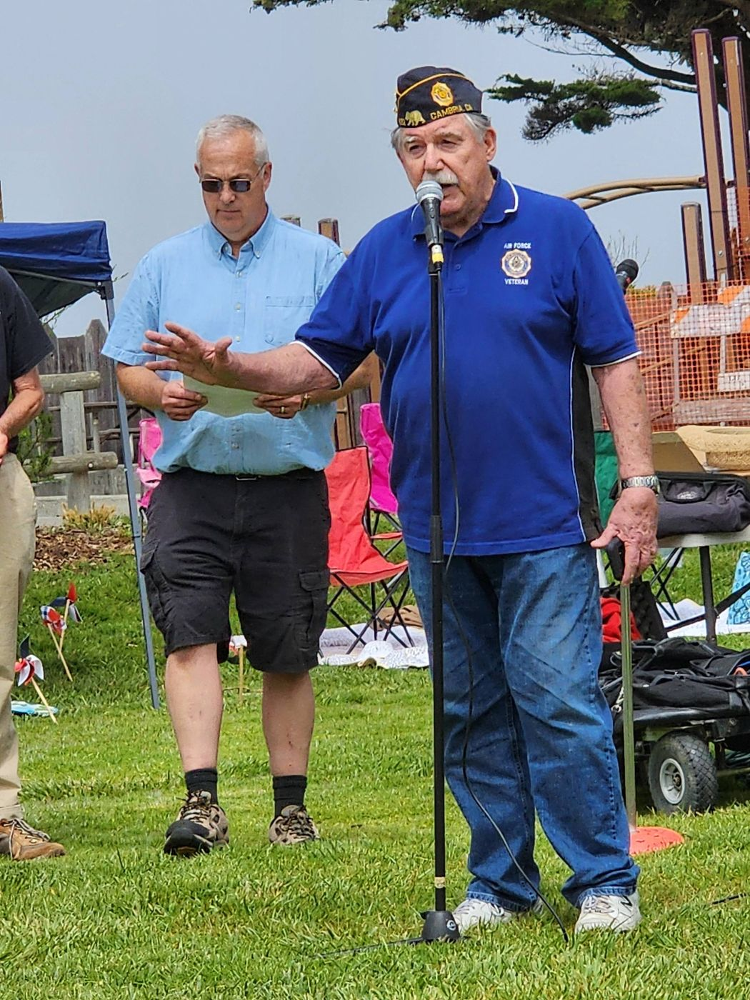

About Post 432
Veterans serving veterans and Cambria
American Legion Post 432 is a community of men and women who honorably served our nation, and who keep on serving: our fellow veterans, today's military families, local young people and the North Coast community.
Our mission
Mutual helpfulness, service and fellowship
“To enhance the well-being of America's veterans, their families, our military and our communities through our commitment to mutual helpfulness, service and fellowship.”
Post 432 is part of The American Legion, the nation's largest wartime veterans service organization, and of the Department of California. Together with the Sons of The American Legion and the American Legion Auxiliary, we make up the American Legion Family here in Cambria.
Membership in the Legion is open to anyone who has served at least one day of active military duty since December 7, 1941, and was honorably discharged or is still serving honorably. See how to join.

What we do
Programs & services
Through programs, events and volunteer service, we support veterans and create opportunities for our whole community.
- Memorial Day services honoring those who gave their lives in service to our country
- Veterans Day services each November 11
- Fourth of July Picnic in the Park at Shamel Park
- Troop Support Services (TS2), created by Post 432 in 2005 to support local service members and their families
- The Flag Memorial in the parking lot of the Veterans Memorial Hall
- Honor Guard for veterans' services and community ceremonies
- Academic scholarships for students at Coast Union and Leffingwell high schools
- Boys State & Boys Nation leadership programs for high school students
- Monthly pancake breakfasts and Toys for Tots
- Guest speakers at Post meetings, which are open to the public

Youth programs
Investing in the next generation
Post 432 awards academic scholarships to students at Coast Union High School and Leffingwell High School, and sponsors young men for American Legion Boys State and Boys Nation, selective programs where high school students learn how government works by running one. The Auxiliary sponsors young women for Girls State.
Students, parents and teachers: ask us about this year's scholarship and Boys State applications.
Meetings & Club 432
Pull up a chair
General meetings are held the first Wednesday of every month at 6:00 PM in the Legion Dining Room, behind the Veterans Memorial Hall. The Post and the Auxiliary meet the same evening, and dinner is served at 5:00 PM for members and guests.
Club 432 is our full-service bar for members and their guests, with home-cooked meals several nights a week:
- Monday
- Burgers & Brew, 6–8 PM
- Tuesday
- Taco Tuesday, 6–8 PM
- Thursday
- Auxiliary dinner at 5 PM ($12, new menu every week)
- Friday
- Club open from 5 PM
- 3rd Saturday
- Pancake breakfast, 8–11 AM. Everyone welcome
Hours can change around holidays. Check the calendar or call (805) 927-5010.

Leadership
Post 432 officers
To reach an officer, call the Post at (805) 927-5010 or send us a message.
Committee chairs
Our story
Milestones
- 2005Post 432 creates Troop Support Services (TS2) to support local service members and their families.
- 2008Sons of The American Legion Squadron 432 receives the Distinguished Service Award, the highest honor a squadron can earn.
- 2011The Cambria Veterans Memorial is dedicated on Memorial Day, May 30, 2011.
- 2026The 45th annual Picnic in the Park celebrates America's 250th birthday.
A voice for veterans
Strength in numbers
The American Legion advocates in Washington, D.C., and in communities across the country for veterans' benefits, military families, active-duty personnel, and a strong military and VA system. When you join Post 432, your voice joins theirs.
Locally, our Service Officer can point veterans and their families toward the benefits and help they've earned. See Veteran Resources or call the Post.
Support Post 432
Ways to give
Post 432 is a tax-exempt organization (Tax ID 95-6196709). Your contribution may be tax-deductible; please consult your tax advisor.
General donations
Make checks payable to “American Legion Post 432” and mail to P.O. Box 697, Cambria, CA 93428-0697.
Troop Support (TS2)
Write “TS2” on the memo line and every dollar goes to the TS2 fund for local military families.
About TS2 →Engraved memorial brick
A $125 donation places a personalized brick on the Post's Flag Memorial.
Design your brick →